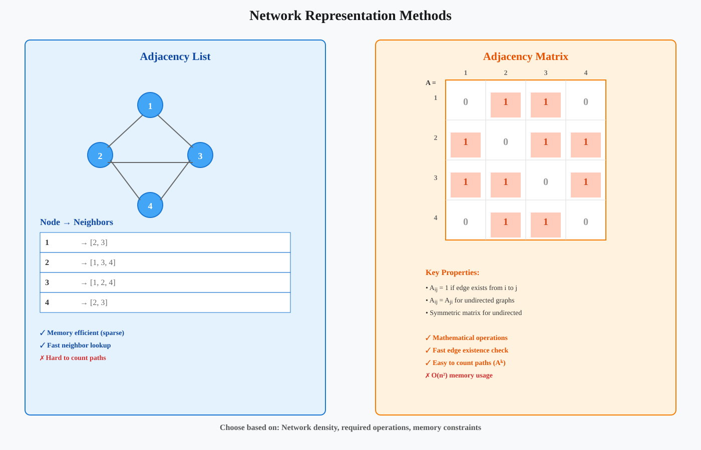
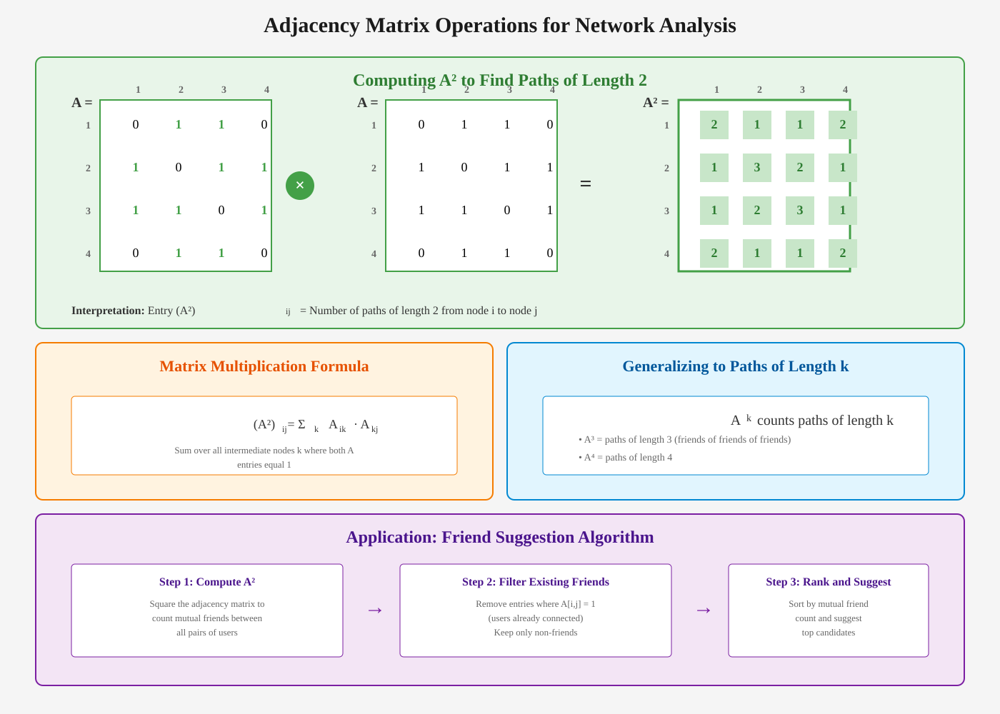
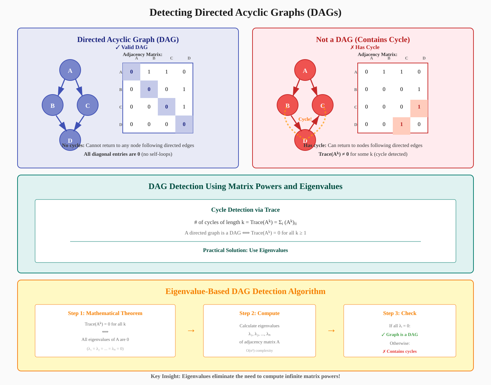

Network Representation
A comprehensive guide to representing and analyzing networks using adjacency lists and matrices
📚 Quick Navigation
- Introduction
- Why Network Representation Matters
- Adjacency List Representation
- Adjacency Matrix Representation
- Matrix Operations for Network Analysis
- Friend Suggestion Algorithm
- Detecting Directed Acyclic Graphs (DAGs)
- Practical Applications
- Implementation Examples
- References & Further Reading
Introduction
Network representation is a fundamental concept in graph theory and network science that enables computational analysis of large-scale networks. This documentation covers two primary methods for representing networks in computer systems: adjacency lists and adjacency matrices, along with their applications in real-world scenarios such as social network analysis and graph structure detection.
Key Topics Covered:
- Adjacency Lists: Simple representation listing connections for each node
- Adjacency Matrices: Matrix-based representation enabling advanced mathematical operations
- Path Counting: Using matrix powers to count paths of various lengths
- DAG Detection: Mathematical methods for detecting directed acyclic graphs
- Practical Applications: Friend suggestions, influence analysis, and network structure

Why Network Representation Matters
Large networks are typically complex, tangled structures that are impossible to analyze visually. When dealing with networks containing thousands or millions of nodes, we need computational methods to extract meaningful information.
Challenges with Visual Analysis:
- Scale: Large networks appear as tangled masses with no discernible structure
- Complexity: Identifying influential nodes or connection patterns is impossible by inspection
- Dynamics: Networks change over time, requiring automated analysis
- Computation: Mathematical operations enable sophisticated queries and analysis
Questions We Need to Answer:
- Who is the most influential person in a social network?
- Which users should we suggest as friends?
- How many degrees of separation exist between two individuals?
- Does the network contain cycles or is it a DAG?
- What are the shortest paths between nodes?
To answer these questions efficiently, we need structured representations that computers can process algorithmically.
Adjacency List Representation
An adjacency list is a straightforward method for representing networks where each node maintains a list of its neighbors.
Structure:
- Each node has an entry listing all nodes it connects to
- Simple to implement and memory-efficient for sparse networks
- Easy to find all neighbors of a given node
Example Network:
NODES | NEIGHBORS
------|----------
1 | 2,3
2 | 1,3
3 | 1,2,4,5,10
4 | 3,5,8,9
5 | 4,10
6 | 3,7
7 | 6,8,9
8 | 4,7,10
9 | 4,7,10
10 | 3,5,8,9
Advantages:
- Memory Efficient: Only stores existing edges
- Fast Neighbor Lookup: O(1) to find all neighbors of a node
- Easy to Add Edges: Simple append operation
- Intuitive: Natural representation matching network structure
Limitations:
- Complex Queries: Difficult to find common neighbors efficiently
- Path Counting: Not straightforward to count paths of specific lengths
- Matrix Operations: Cannot leverage linear algebra techniques
- Edge Existence: O(degree) to check if specific edge exists
Adjacency Matrix Representation
An adjacency matrix is a two-dimensional square array where rows and columns are indexed by nodes, and entries indicate edge existence and weight.
Basic Structure:
Aᵢⱼ = {
1 if edge exists from node i to node j
0 otherwise
}
Key Properties:
- Dimensions: n×n matrix for network with n nodes
- Binary Entries: 0 or 1 for unweighted graphs
- Weighted Entries: Edge weights for weighted networks
- Symmetry: Symmetric matrix for undirected networks (Aᵢⱼ = Aⱼᵢ)
Undirected Networks:
In undirected networks, an edge between nodes i and j creates bidirectional connections:
- Edge (i,j) implies both Aᵢⱼ = 1 and Aⱼᵢ = 1
- The adjacency matrix becomes symmetric
- Entry (i,j) equals entry (j,i)
Weighted Networks:
Adjacency matrices can encode edge weights by replacing binary values with weights:
Aᵢⱼ = {
wᵢⱼ if edge exists with weight wᵢⱼ
0 if no edge exists
}
Example Use Cases for Weighted Edges:
- Social Networks: 10 for close friends, 1 for acquaintances
- Transportation: Travel time or distance between locations
- Communication: Frequency or bandwidth of connections
Advantages:
- Mathematical Operations: Enables linear algebra techniques
- Fast Edge Lookup: O(1) to check if edge exists
- Path Counting: Matrix powers count paths efficiently
- Standard Algorithms: Compatible with many graph algorithms
Disadvantages:
- Memory Usage: O(n²) space even for sparse networks
- Sparse Networks: Wastes memory when most entries are zero
- Scaling: Becomes impractical for very large networks
Matrix Operations for Network Analysis
Adjacency matrices enable powerful mathematical operations that reveal network structure and properties.
Counting Paths of Length 2
Problem: Find pairs of nodes with many common neighbors (potential friend suggestions)
Solution: Multiply the adjacency matrix by itself
(A²)ᵢⱼ = Σₖ Aᵢₖ · Aₖⱼ
Interpretation:
- A²: Each entry (A²)ᵢⱼ counts paths of length 2 from i to j
- Common Neighbors: Number of intermediate nodes k where both Aᵢₖ = 1 and Aₖⱼ = 1
- Friend Suggestions: High values in A² indicate many mutual connections
Mathematical Derivation:
For nodes i and j, we want to count how many nodes k satisfy:
- Node i connects to node k (Aᵢₖ = 1)
- Node k connects to node j (Aₖⱼ = 1)
This is exactly what matrix multiplication computes:
(A²)ᵢⱼ = Σₖ₌₁ⁿ Aᵢₖ · Aₖⱼ
Each term contributes 1 when both Aᵢₖ = 1 and Aₖⱼ = 1, effectively counting common neighbors.
Generalizing to Longer Paths
Powers of Adjacency Matrix:
Aᵏ counts paths of length k
Examples:
- A³: Counts paths of length 3 (friends of friends of friends)
- A⁴: Counts paths of length 4
- Aᵏ: Counts all paths of length k between any two nodes
Applications:
- Influence Spread: How information propagates through k degrees
- Network Distance: Finding paths of specific lengths
- Connectivity: Determining reachability in k steps
- Clustering: Identifying tightly connected groups

Friend Suggestion Algorithm
Social networks like Facebook use adjacency matrix operations to suggest potential friends based on mutual connections.
Algorithm Overview:
- Compute A²: Calculate the square of the adjacency matrix
- Identify Candidates: For each user i, examine row i of A²
- Filter Existing Friends: Remove entries where Aᵢⱼ = 1 (already connected)
- Rank Suggestions: Sort remaining entries by value (number of mutual friends)
- Return Top Matches: Suggest users with highest mutual friend counts
Mathematical Formulation:
For user i, the friend suggestion score for candidate j is:
Score(i,j) = {
(A²)ᵢⱼ if Aᵢⱼ = 0 (not already friends)
0 if Aᵢⱼ = 1 (already friends)
}
Why This Works:
- Mutual Connections: People with many mutual friends are likely in the same social circles
- Homophily Principle: Similar people tend to connect
- Transitive Trust: Friends of friends are more likely to become friends
- Network Closure: Social networks tend toward triadic closure
Example Calculation:
For two users represented by rows in A:
Row i: [1, 1, 0, 1, 0, 1, 0, 0, 0, 1]
Row j: [0, 0, 0, 1, 0, 0, 1, 0, 0, 1]
Dot Product = 1×0 + 1×0 + 0×0 + 1×1 + 0×0 + 1×0 + 0×1 + 0×0 + 0×0 + 1×1
= 2 mutual friends
Efficiency Considerations:
- Sparse Matrices: Use sparse matrix implementations for large networks
- Incremental Updates: Update A² incrementally as edges are added
- Approximations: Sample-based methods for very large networks
- Batch Processing: Compute suggestions periodically rather than real-time
Detecting Directed Acyclic Graphs (DAGs)
A Directed Acyclic Graph (DAG) is a directed graph with no cycles. DAG detection is crucial for many applications including task scheduling, dependency resolution, and causal inference.
DAG Characterization:
A directed graph is a DAG if and only if it contains no directed cycles (paths from a node back to itself).
Cycle Detection Using Matrix Powers:
The number of cycles of length k in a directed graph equals the trace of Aᵏ:
# Cycles of length k = Trace(Aᵏ) = Σᵢ (Aᵏ)ᵢᵢ
DAG Condition:
A directed network is a DAG if and only if:
Trace(Aᵏ) = 0 for all k ≥ 1
Why This Works:
- Diagonal Entries: (Aᵏ)ᵢᵢ counts paths of length k from node i back to itself
- Cycles: Any non-zero diagonal entry indicates a cycle
- All Powers: Must check all powers to ensure no cycles of any length
Computational Challenge
Checking all powers up to infinity is computationally infeasible. However, we can use a fundamental theorem from linear algebra.
Mathematical Theorem:
Trace(Aᵏ) = 0 for all k ⟺ All eigenvalues of A are 0
Practical DAG Detection Algorithm:
- Compute Eigenvalues: Calculate eigenvalues λ₁, λ₂, ..., λₙ of adjacency matrix A
- Check Condition: Verify that all eigenvalues equal zero
- Conclusion: If all λᵢ = 0, the graph is a DAG; otherwise, it contains cycles
Why Eigenvalues Work:
The trace of any matrix power can be expressed in terms of eigenvalues:
Trace(Aᵏ) = λ₁ᵏ + λ₂ᵏ + ... + λₙᵏ
If all eigenvalues are zero, then Trace(Aᵏ) = 0 for all k.
Computational Complexity:
- Eigenvalue Computation: O(n³) for n×n matrix
- Efficient Algorithms: Specialized methods exist for sparse matrices
- Practical Scalability: Feasible for networks with millions of nodes

Practical Applications
Network representation techniques have numerous real-world applications across various domains.
Social Network Analysis
Friend Recommendations:
- Compute A² to find users with many mutual friends
- Rank candidates by mutual connection count
- Filter by additional criteria (interests, location, etc.)
Influence Analysis:
- Identify nodes with highest degree (most connections)
- Calculate centrality measures using matrix operations
- Track information propagation through network
Dependency Management
Software Packages:
- Represent package dependencies as directed graph
- Check for circular dependencies using DAG detection
- Determine installation order using topological sort
Task Scheduling:
- Model task dependencies as DAG
- Identify parallel execution opportunities
- Optimize scheduling based on critical paths
Knowledge Graphs
Relationship Discovery:
- Find indirect relationships using matrix powers
- Compute semantic distances between entities
- Identify clusters of related concepts
Transportation Networks
Route Planning:
- Represent road networks as weighted graphs
- Find shortest paths using graph algorithms
- Analyze network connectivity and bottlenecks
Biological Networks
Protein Interactions:
- Model protein-protein interactions as networks
- Identify functional modules and pathways
- Predict new interactions based on network topology
Gene Regulatory Networks:
- Represent gene regulation as directed graph
- Analyze feedback loops and control mechanisms
- Predict effects of perturbations
Implementation Examples
Python: Adjacency List
class GraphAdjList:
def __init__(self):
self.adj_list = {}
def add_node(self, node):
if node not in self.adj_list:
self.adj_list[node] = []
def add_edge(self, u, v):
self.add_node(u)
self.add_node(v)
self.adj_list[u].append(v)
def get_neighbors(self, node):
return self.adj_list.get(node, [])
def has_edge(self, u, v):
return v in self.adj_list.get(u, [])
Python: Adjacency Matrix with NumPy
import numpy as np
class GraphAdjMatrix:
def __init__(self, num_nodes):
self.n = num_nodes
self.matrix = np.zeros((num_nodes, num_nodes), dtype=int)
def add_edge(self, u, v, weight=1):
self.matrix[u][v] = weight
def has_edge(self, u, v):
return self.matrix[u][v] != 0
def count_paths_length_k(self, k):
"""Count paths of length k using matrix power"""
return np.linalg.matrix_power(self.matrix, k)
def is_dag(self):
"""Check if graph is DAG using eigenvalues"""
eigenvalues = np.linalg.eigvals(self.matrix)
return np.allclose(eigenvalues, 0)
Python: Friend Suggestion Algorithm
def suggest_friends(adj_matrix, user_id, top_k=5):
"""
Suggest friends based on mutual connections
Args:
adj_matrix: Adjacency matrix of social network
user_id: ID of user to suggest friends for
top_k: Number of suggestions to return
Returns:
List of (user_id, mutual_friend_count) tuples
"""
# Compute A²
A_squared = np.dot(adj_matrix, adj_matrix)
# Get mutual friend counts for user
mutual_counts = A_squared[user_id]
# Remove existing friends and self
for i in range(len(adj_matrix)):
if adj_matrix[user_id][i] == 1 or i == user_id:
mutual_counts[i] = 0
# Get top k suggestions
suggestions = sorted(
enumerate(mutual_counts),
key=lambda x: x[1],
reverse=True
)[:top_k]
return suggestions
Interactive Colab Example

Features:
- Visualize adjacency lists and matrices
- Interactive friend suggestion demo
- DAG detection examples
- Performance comparison of representations
🎯 Key Takeaways
Representation Methods:
- Adjacency Lists: Memory-efficient for sparse networks, simple neighbor queries
- Adjacency Matrices: Enable mathematical operations, efficient for dense networks
Matrix Operations:
- A²: Counts paths of length 2, finds common neighbors
- Aᵏ: Counts paths of length k, analyzes multi-hop connectivity
- Eigenvalues: Determine DAG property without computing infinite powers
Practical Applications:
- Social Networks: Friend suggestions based on mutual connections
- Software Engineering: Dependency resolution and circular dependency detection
- Network Science: Influence analysis, community detection, path finding
Choosing the Right Representation:
- Use Adjacency Lists when: Network is sparse, only need neighbor queries
- Use Adjacency Matrices when: Need mathematical operations, analyzing paths, network is dense
References & Further Reading
Foundational Texts:
- "Introduction to Algorithms" by Cormen, Leiserson, Rivest, and Stein
-
Comprehensive coverage of graph representations and algorithms
-
"Networks, Crowds, and Markets" by Easley and Kleinberg
- Social network analysis and applications
-
Available free online: https://www.cs.cornell.edu/home/kleinber/networks-book/
-
"Graph Theory" by Reinhard Diestel
- Mathematical foundations of graph theory
- Comprehensive treatment of graph properties
Research Papers:
- "The Anatomy of a Large-Scale Hypertextual Web Search Engine" by Brin and Page
- PageRank algorithm using matrix operations
-
arXiv: cs/9301006
-
"Link Prediction in Social Networks" by Liben-Nowell and Kleinberg
- Friend suggestion algorithms and evaluation
-
Available on ACM Digital Library
-
"Detecting Cycles in Dynamic Graphs in Polynomial Time" by Bender et al.
- Advanced cycle detection algorithms
- arXiv: 1612.05914
Online Resources:
- NetworkX Documentation
- Python library for network analysis
-
https://networkx.org/documentation/stable/
-
Stanford Network Analysis Project (SNAP)
- Large network datasets and tools
- http://snap.stanford.edu/
Additional Topics:
- Spectral Graph Theory: Understanding networks through eigenvalues and eigenvectors
- Community Detection: Finding clusters in networks
- Centrality Measures: Identifying important nodes
- Random Graph Models: Statistical models of network formation
Document Version: 1.0
Last Updated: October 2025
Target Audience: AI/ML Engineers, Data Scientists, Network Researchers
Prerequisites: Linear Algebra, Basic Graph Theory, Python Programming